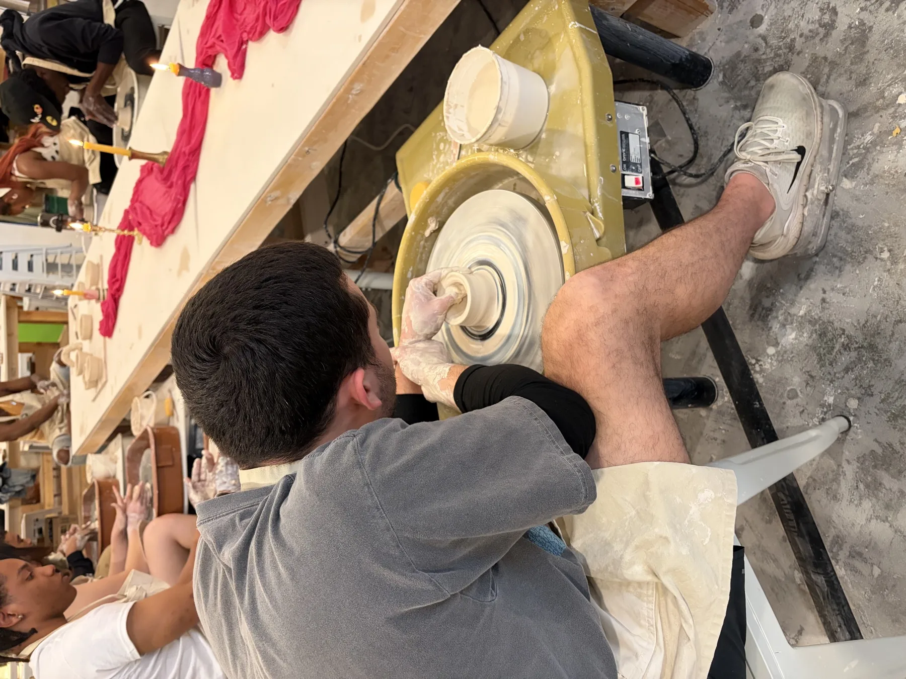
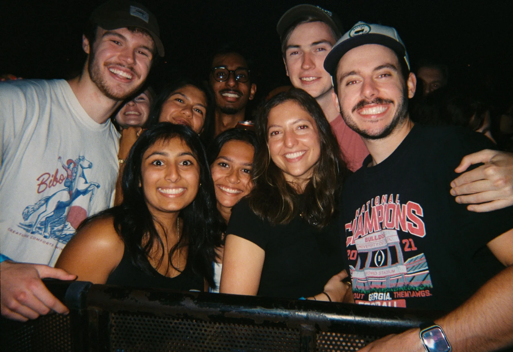
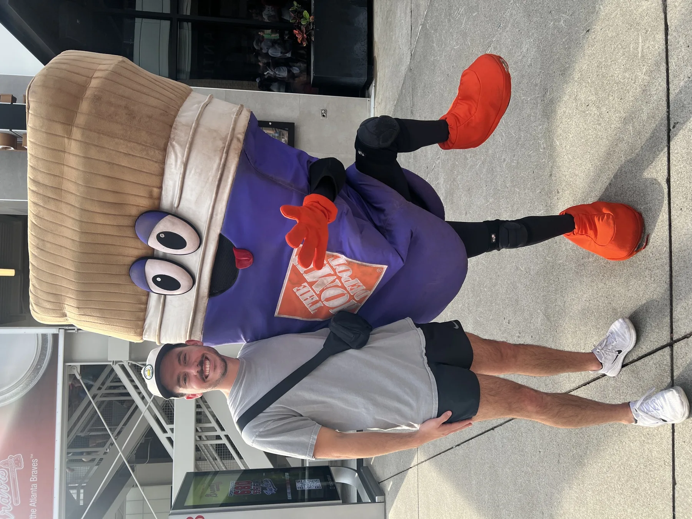

Enterprise accounts
Direct ownership across accounts representing roughly half of managed contract value.
Open to Analyst, Consultant, and Solutions Engineer roles
Technical consultant who turns operational needs into reliable workflows, clearer data, and measurable business results.
Enterprise account ownership · Functional requirements · Analytics · Integrations · Cross-functional delivery
Follow the trail to impact↓Selected results
Proof points from customer-facing operations, data, and integration work.
Direct ownership across accounts representing roughly half of managed contract value.
Analytics and billing logic operating at meaningful production scale.
Usage data connected to decisions Finance could act on.
Guidance supported by a repeatable publishing and validation workflow.
Case studies
Each example shows the situation, the outcome, and the operating path behind it.
Problem: Usage lived across active and legacy products, making billing decisions slow and difficult to validate.
Data model, SQL and billing logic, reporting views, validation, and the translation of usage into a Finance-ready workflow.
Problem: Endpoint guidance was difficult to find, deploy, and validate as customer-facing documentation grew.
Documentation structure, publishing workflow, deployment coordination, and endpoint request and response validation.
Professional experience
A progression from technical internships to enterprise account ownership and cross-functional delivery.
Consultant · Cloud systems and process improvement
I own customer-facing work and coordinate across Operations, Cloud Services, Finance, and R&D to turn functional requirements into reliable technical delivery.
Cloud Services Intern / Co-op. Built an SSO search tool for 50K+ shipper records and analysis that identified approximately $40K in Azure savings.
Systems Operations Intern. Automated onboarding work and found duplicate accounts tied to approximately $36K in annual savings.
Research Intern · ATAS Lab. Built C# integration components for robotic object-detection research.
Functional + technical
I work comfortably between requirements, systems, data, and delivery.
Education
B.S. Computer Systems Engineering · GPA 3.83 · May 2025
Oracle SQL · BigQuery · Power BI · DAX · Excel
Requirements · Account ownership · Technical demos · Process mapping · Stakeholder coordination · Documentation
TMS · EDI · AS2 · SFTP · Google Cloud · Azure
Python · PowerShell · Perl · Bash · JavaScript · C# · Git · CI/CD
Outside work
Baking, caring for houseplants, and learning drums and bass are the quiet counterweight to systems work.



Open to the next problem
For Analyst, Consultant, and Solutions Engineer opportunities involving operations, data, integrations, and process improvement.